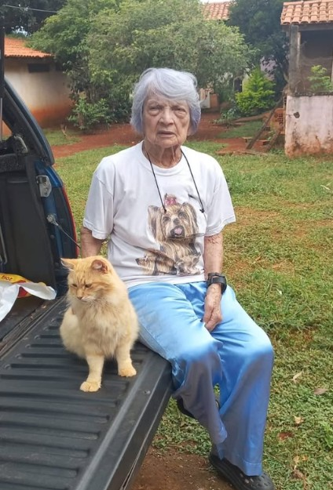

Abrigo e proteção
Cada animal recebe um espaço seguro enquanto aguarda uma nova oportunidade.
Instituto Baktaran Irmãs Coragem
Nem todo mundo pode adotar, mas todo mundo pode participar de uma história de cuidado. Sua ajuda mantém alimento, saúde e acolhimento diário.

“O amor alcança qualquer distância.”
Conheça o IBIC
O Instituto Baktaran Irmãs Coragem acolhe animais que precisam de cuidado, segurança e uma nova chance.
Nosso trabalho é garantir que cada um deles receba atenção, proteção e dignidade durante todo o período de acolhimento.
Acompanhar o trabalho no Instagram ↗O que o IBIC oferece
Cada animal é acompanhado de acordo com suas necessidades durante todo o período de acolhimento.
Cada animal recebe um espaço seguro enquanto aguarda uma nova oportunidade.
Alimentação, atenção, higiene e acompanhamento fazem parte da rotina de acolhimento.
O Instituto busca garantir tratamento, bem-estar e condições adequadas para cada animal.
O cuidado continua todos os dias, com atenção às necessidades de cada resgatado.
Apadrinhamento à distância
Ao se tornar padrinho ou madrinha, você apoia mensalmente os cuidados de um animal acolhido pelo IBIC.
Seu apoio entra na rotina do afilhado: alimento, saúde, segurança e notícias sobre o desenvolvimento dele.
Conheça os animais acolhidos pelo IBIC, veja suas informações principais e escolha aquele que deseja apoiar de perto.
Combine uma contribuição recorrente com o Instituto para ajudar nos custos de alimentação, saúde e cuidados essenciais.
Receba notícias sobre a rotina, o desenvolvimento e o bem-estar do animal que você escolheu apadrinhar.
Animais para apadrinhar
Veja os animais acolhidos pelo IBIC e escolha quem você quer acompanhar de perto, mesmo à distância.

Toda ajuda mantém uma história viva
Não é apenas uma contribuição mensal. É participar da recuperação, da proteção e da rotina de um animal que depende desse apoio.
Participar de uma recuperação.
Apoiar proteção, saúde e rotina.
Acompanhar uma história real.
Outras formas de ajudar
Materiais, tempo e divulgação também sustentam o trabalho do IBIC.
Uma das formas mais diretas de apoiar a rotina.
Itens veterinários fazem diferença nos tratamentos.
Areia e limpeza mantêm os espaços adequados.
Tempo e disposição também fazem parte do cuidado.
Divulgar aproxima novas pessoas da causa.
Entre em contato
Use Pix, e-mail ou WhatsApp para falar com o IBIC.
O amor alcança qualquer distância